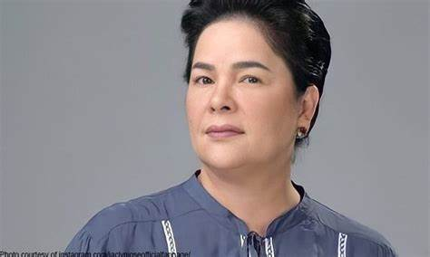

TRIBUTE OF JACLYN

Mary Jane Santa Ana Guck (October 21, 1963 - March 2, 2024[1][2][3]), known professionally as Jaclyn Jose, was a Filipino actress
. Known for her penetrating eyes and antagonistic roles in film and soap operas, she was a recipient of various accolades, including five Gawad Urians, two Luna Awards, and a FAMAS Award, in addition to an Asian Film Awards nomination.
She is the only Filipino to win the Cannes Film Festival Award for Best Actress for the movie Ma' Rosa (2016).
She was also described as the "Queen of Underacting" for her ability to deliver restrained and subtle performances.[4]
Jose made her film acting debut in 1984, starring in dramas directed by William Pascual, Chito S. Roño and Lino Brocka,
which earned her recognition in the Philippine movie awards circuit. In the 1990s, she began appearing in television soap operas.
Jose was also honored by the National Commission for Culture and the Arts at the Ani ng Dangal ceremony in 2017.[5] In 2023,
she was awarded the Movie Icon Award by the Society of Philippine Entertainment Editors.